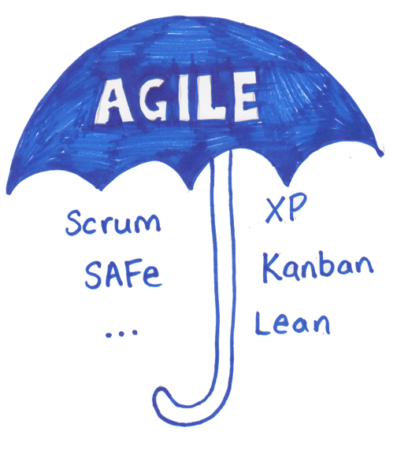
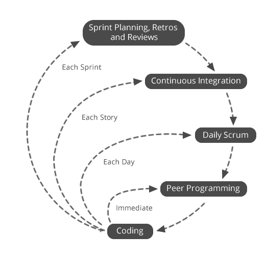
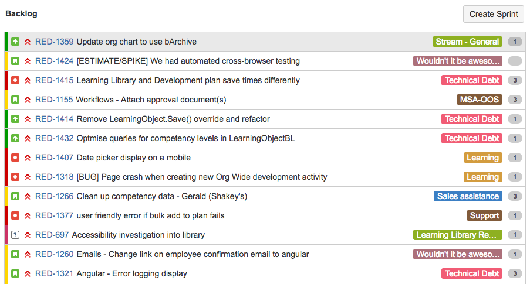
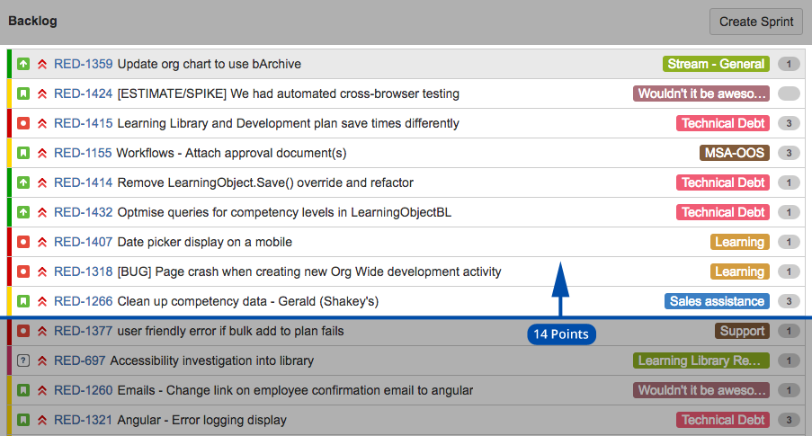
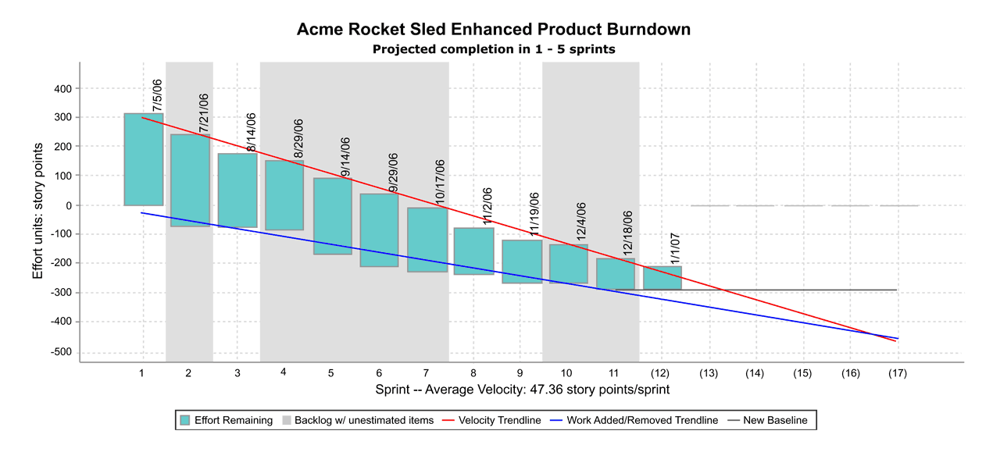
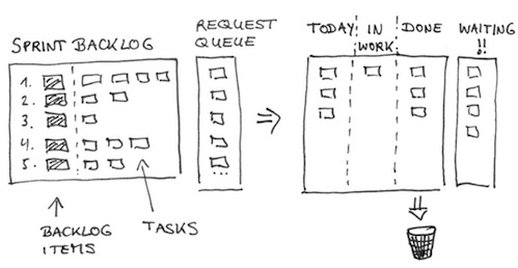
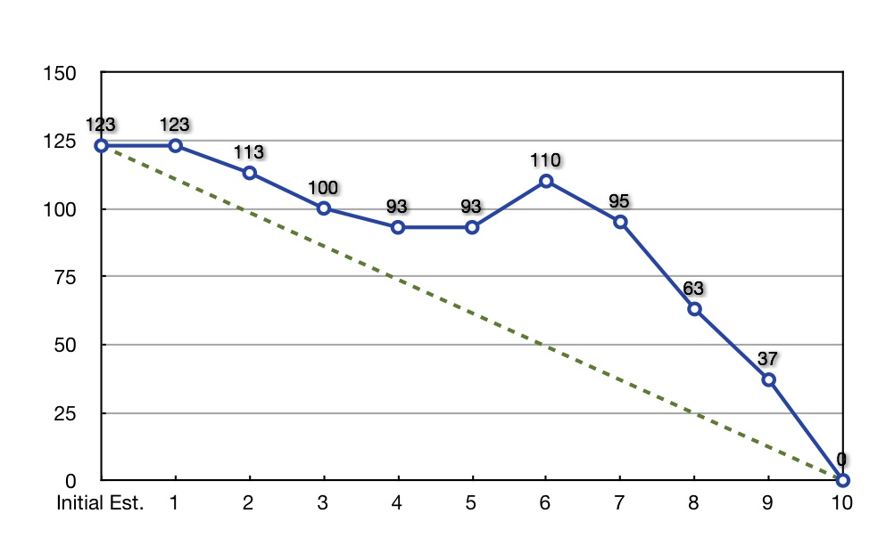

We don't do Scrum
The Agile Manifesto
- Individuals and interactions over processes and tools
- Working software over comprehensive documentation
- Customer collaboration over contract negotiation
- Responding to change over following a plan
The Agile Manifesto
- Individuals and interactions over processes and tools
- Working software over comprehensive documentation
- Customer collaboration over contract negotiation
- Responding to change over following a plan
Agile Frameworks
Inspect and Adapt Loops
Scrum is like chess. You either play it as its rules state, or you don’t. Scrum and chess do not fail or succeed. They are either played, or not.
Ken Schwaber
The Scrum Framework
Roles
Artefacts
Ceremonies
The Scrum Framework
Roles
Artefacts
Ceremonies
5-9 team members
Product Owner
ScrumMaster
The Scrum Framework
Roles
Artefacts
Ceremonies
Product Backlog
As a Product Owner
I want to have the items at the top of the Product Backlog be well defined and scoped
so that they are ready to be picked up by the team
I want to have the items at the top of the Product Backlog be well defined and scoped
so that they are ready to be picked up by the team
Product Backlog
- Owned by the Product Owner
- Is always prioritised
- Has more clarity towards to the top
- Everything should be sized
Predicting a release
Release Burndown Chart
Sprint Backlog
Sprint Burndown Chart
Product Increment
Definition of Done
Per story
- Unit / vertical tests
- Code reviewed
- Code landed
Per release
- Monitoring in place
- Security checklist complete
- Knowledge portal updated
The Scrum Framework
Roles
Artefacts
Ceremonies
The most efficient and effective method of conveying information to and within a development team is face-to-face conversation.
Agile Manifesto Principle
Sprint Planning
Timeboxed: 4hrs for a 2 week sprint
Daily Scrum
Timeboxed: 15min
Backlog Refinement
Sprint Retrospective
Timeboxed: 1.5hrs for a 2 week sprint
Sprint Review
Timeboxed: 2hrs for a 2 week sprint